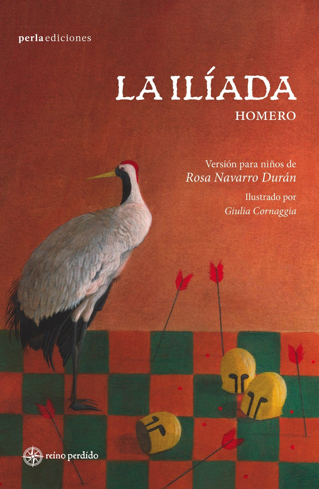
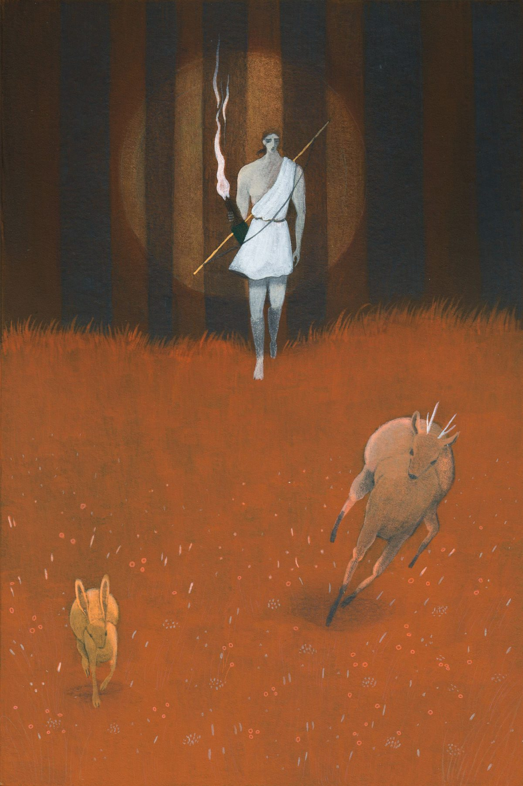
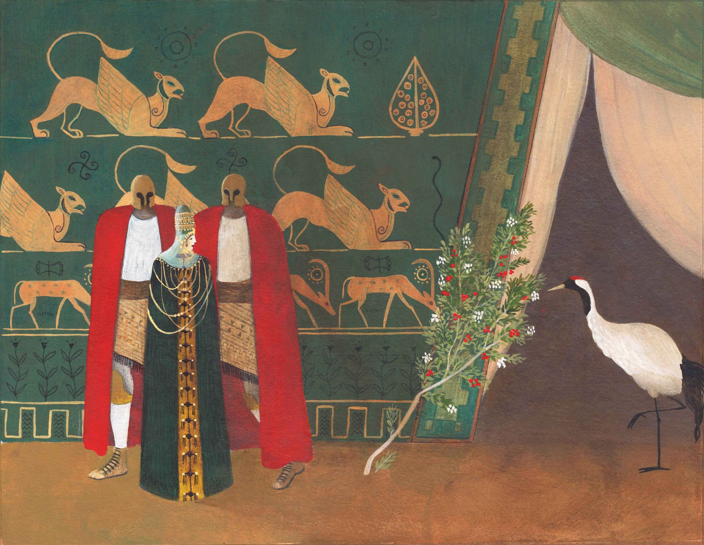
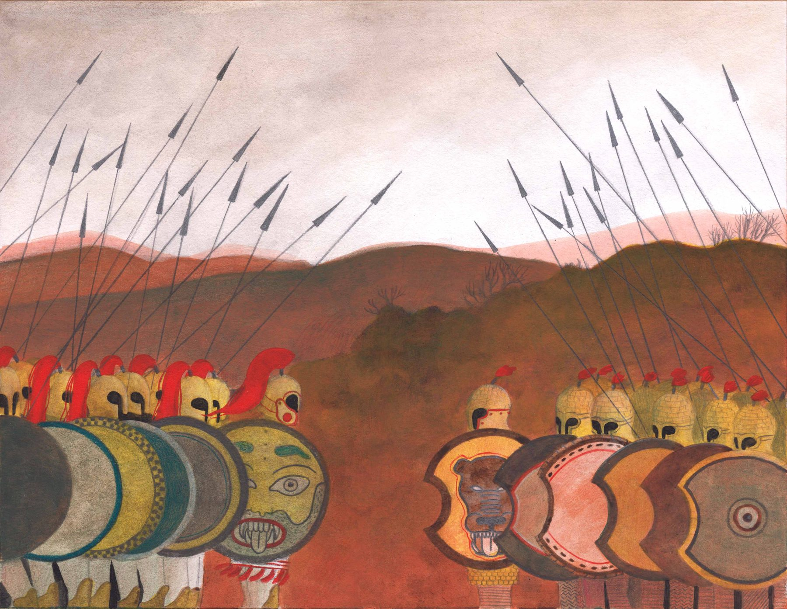
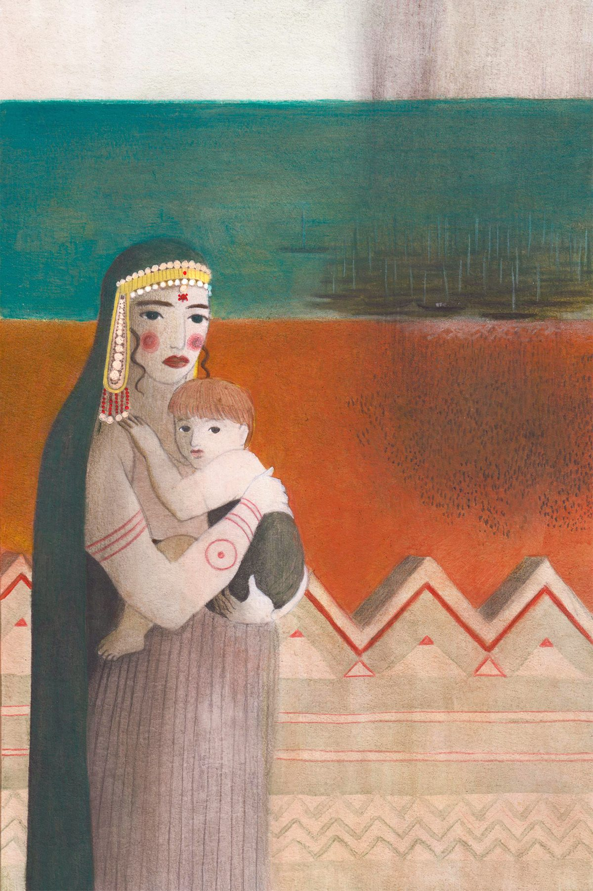
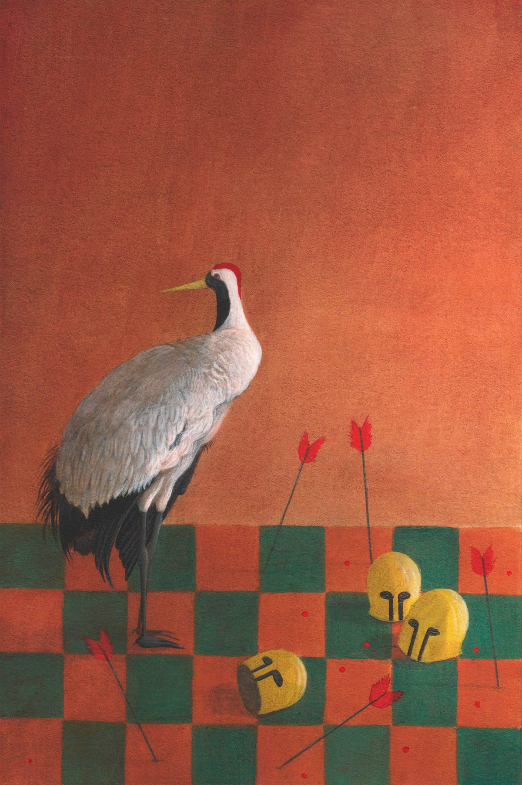

L'Iliade di Omero è una storia immortale e affascinante che inaugura la collana Reino Perdido. Il libro racconta gli ultimi mesi della guerra di Troia — nove anni di lotte e dolori — narrando l'ira del dio Apollo che scatena la peste sull'esercito acheo a causa delle azioni del re Agamennone.




